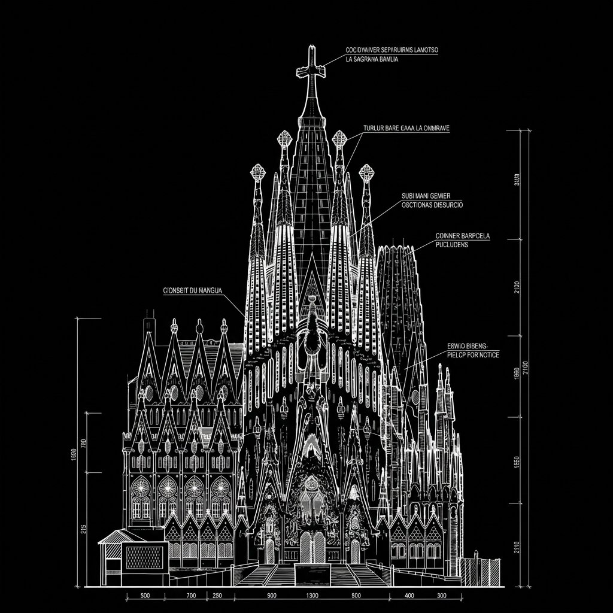
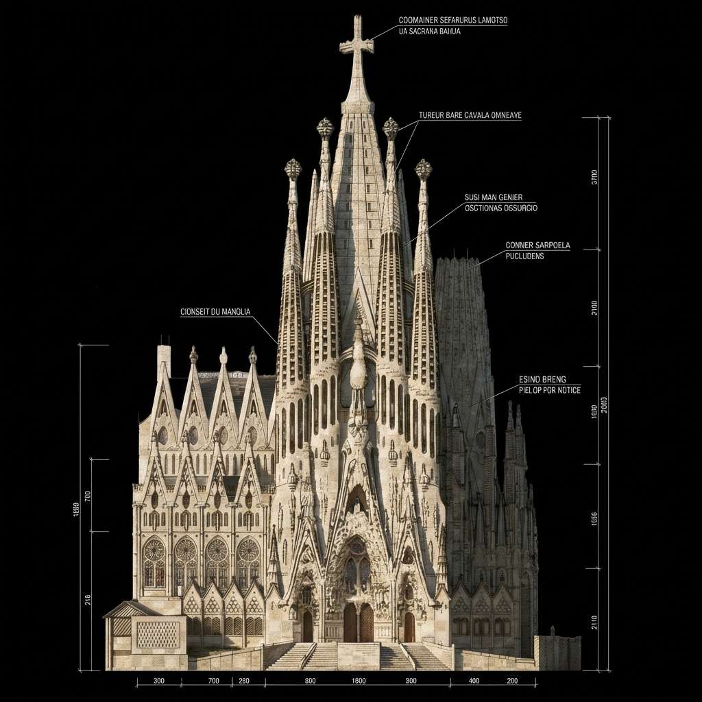

Draw the start.
A line-art / architectural blueprint of the landmark on pure black. White strokes, dimension lines, faint callouts. This is frame zero.
A scroll-through of how a landmark assembles — from architectural blueprint to luminous bloom to realized stone. One image per scroll tick, 121 frames in total, extracted with ffmpeg from a Kie.ai transition video and played back as a flipbook.
Process / 02
The same pipeline works for any landmark you can describe in two frames — a building, a statue, a bridge, a folly. Swap the input images and re-run.
A line-art / architectural blueprint of the landmark on pure black. White strokes, dimension lines, faint callouts. This is frame zero.
A fully realized, photo-real version in the same composition. Same camera, same crop — only the materiality changes. This is frame final.
Feed both stills to Kie.ai. The model writes the frames in between — usually 121 of them, a five-second transition at 24fps.
kie --start start.png --end end.png
Slice the video into individual JPGs. The webpage swaps frames on scroll — no video player, no playback bar, just geometry under the wheel.
ffmpeg -i sagrada.mp4 frame_%03d.jpg
Same pipeline, different landmark. The two bookend images were the only inputs — an 1889 engineering elevation and an editorial study of the finished tower — and ffmpeg’s xfade wrote the 121 intermediate frames itself, no model required.
Bookends / 03
These are the only two images the pipeline saw. The scroll above is the model’s answer to “become this.”

The blueprint. Geometry, dimension lines, no materiality.

The realized. Stone, light, weight — one final image.
Make your own. Drop a blueprint and a realized render of any landmark into the pipeline. The intermediate frames write themselves — the rest of this page just plays them back to scroll.
Field Study 03 is in the queue — another landmark, same pipeline. Subscribe on the Tester Tech newsletter to get the next one in your inbox, or skip ahead to the family of devices this study lives next to.